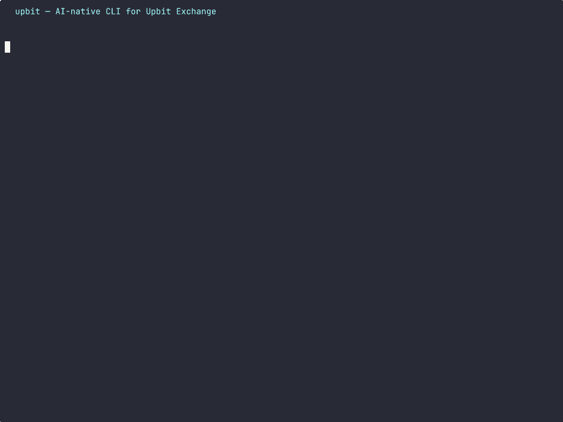

upbit — AI 친화적 CLI
사람과 AI 에이전트 모두를 위해 설계된 유일한 Upbit CLI.


설치
curl -sSL https://kyungw00k.dev/upbit/install.sh | sh # 빠른 설치brew install kyungw00k/cli/upbit # Homebrew📊 시세 조회
실시간 현재가, SQLite 캐시 기반 과거 캔들 조회, 호가창 깊이, 체결 스트림. KRW/BTC/USDT 전 마켓 지원.
upbit ticker KRW-BTC
upbit candle KRW-BTC -i 1d --from 2025-01-01💰 거래
지정가/시장가 주문, 호가 단위 자동 보정, 퍼센트 주문(-V 50%), 가격 키워드(-p now), 예약 주문(--watch).
upbit buy KRW-BTC -p now -V 50%
upbit sell KRW-BTC -V 100%🖥️ 실시간 TUI
Bubble Tea 기반 전체 화면 터미널 UI — 실시간 시세, 호가 깊이 차트, 체결 스트림, ASCII 캔들스틱 차트 + 거래량. Tab으로 마켓 전환.
upbit watch candle KRW-BTC -i 1m
upbit watch orderbook KRW-BTC🤖 AI 연동
LLM/MCP 도구 호출용 JSON Schema 내보내기. Non-TTY 자동 JSON 출력. Claude Code & agentskills.io 스킬 설치.
upbit tool-schema buy
upbit ticker KRW-BTC | jq '.trade_price'AI 에이전트 스킬
curl -sSL https://kyungw00k.dev/upbit/install-skill.sh | sh
~/.agents/skills/upbit/ (agentskills.io)과
.claude/skills/upbit/ (Claude Code) 양쪽에 설치됩니다.
LLM 도구 호출 스키마
upbit tool-schema # 전체 명령 JSON Schema
upbit tool-schema buy # 응답 필드 설명 포함주요 기능
- 📊 ASCII 캔들스틱 차트 + 거래량 패널
- 💱 호가 단위 자동 보정 (KRW/BTC/USDT)
- 💾 SQLite 캔들 캐시 + 자동 페이지네이션
- 🌍 다국어 — 한국어 / 영어 (POSIX 로케일)
- 🔄
upbit update로 자체 업데이트 - 📦 단일 정적 바이너리, 런타임 의존성 없음